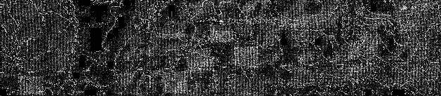
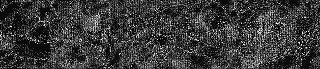
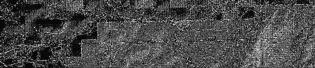
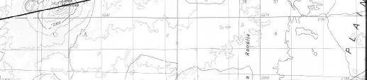
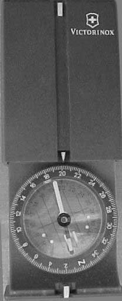
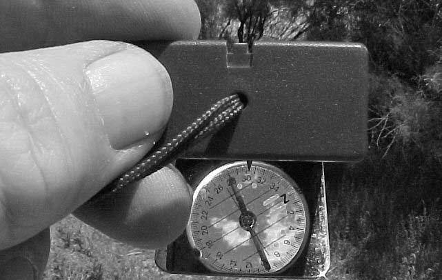
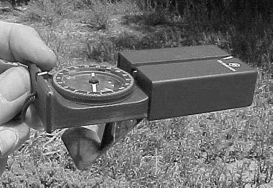
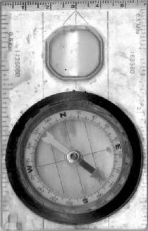

1:24,000 is the scale for USGS Topographic Quad Maps. One inch on the
map is equal to 24,000 inches, 2000 feet of terrain distance. Possessing
7.5 minute topo maps, and the ability to understand those helps a lot.
They are published by the US Government and are a bargain, even at the
prices charged for them today.
1:100,000 scale is used by BLM and several other US Government
agencies One inch on the map equals 100,000 inches actual distance.
8333 feet per inch, or slightly over 1.5 miles to the inch.
1:250,000 is used for Delorme Atlas and Gazetteers and Roads of (Where
You Are). Those show maps on a scale of one inch equals 4 miles. Both are good, showing a level of detail approaching the 30x60 Quads. These have the advantage of covering the entire state where you are.
Minutes
Ive never understood the reasoning for doing so, but US Government agencies and other map gurus use the term minutes to define the size of the area a map covers. The earth spins at a speed of 1000 miles per hour. It is 24,000 miles in circumference. Therefore, at the Equator, one mile passes directly under the sun every minute. A 7.5 Minute 1:24,000 scale USGS Quad covers an area 7.5 miles square. A 1:100,000 scale 30 x 60 Minute BLM Quad covers an area 30 miles wide by 60 miles long.
Contour Intervals
The illustration at the beginning of this section shows a portion of a USGS 7.5
Minute Quad. A part of the emphasis of the map includes specific terrain features shown in contour lines. The wavy lines are parallel contour lines, each following a single elevation. On this example the contour interval is 200 feet because the ground surface is more vertical than horizontal. In flatter areas the maps use 40 foot contour intervals, or in near-level terrain, 10 foot intervals.
Intervals also increase and decrease to correspond with the minute/scale of the map. A 30x60 Minute BLM Map for rough terrain has contour intervals of 20 meters. A Delorme Gazetteer has contour intervals of 60 meters.
Contour Intervals
The illustration at the beginning of this section shows a portion of a USGS 7.5
Minute Quad. A part of the emphasis of the map includes specific terrain features shown in contour lines. The wavy lines are parallel contour lines, each following a single elevation. On this example the contour interval is 200 feet because the ground surface is more vertical than horizontal. In flatter areas the maps use 40 foot contour intervals, or in near-level terrain, 10 foot intervals.
Intervals also increase and decrease to correspond with the minute/scale of the map. A 30x60 Minute BLM Map for rough terrain has contour intervals of 20 meters. A Delorme Gazetteer has contour intervals of 200 feet for Arizona and
300 feet for New Mexico.



Map from DeLormes New Mexico Atlas & Gazetteer
Copyright © DeLorme, Yarmouth, Maine reprinted by permission from Delorme, August 14, 2003.
This illustrates the surprising detail on the Delorme maps for a remote area of
New Mexico north of the Datil Mountains. The dotted lines are two-track dirt roads. The combination of shading, detail and contour lines render the map usable for motorized travel and trekking in spite of the fact the shaded squares are one mile square.
The best map for your needs.
7.5 Minute Quads: Driving the back country in a 4x4 covers a lot of ground. If you are just exploring and dont have a specific destination in mind youll have a lot of money and space invested in maps if you try to use USGS 7.5 minute
Quadrangles for general navigating. They come flat and if you use them a lot youll want to avoid folding them, which wears them out. On the other hand, if you want specific, detailed information about the terrain you are trekking afoot or canyons you are exploring, the 7.5 Quad is the best you can get. Id suggest buying 7.5 Quads for the area immediately surrounding your specific destination.
Theres no excuse for ever getting lost if you have a 7.5 Quad folded up in your pocket. Almost no one who gets lost has one. If there are any dwellings, stock tanks, windmills, or major roads within 3 1/4 miles of the center of the quad you are on youll know where they are.




Folding BLM and USFS maps on a 1:100,000 scale are good for showing remote roads, but lack the detail of the 7.5 quads. Theyre also more difficult to make sense of from the Long/Lat and UTM coordinates in the margins.
However, some have the added advantage of identifying whether you are on private land, or public land. One set of the BLM maps even identifies whether the mineral rights are owned by the public, or are privately owned.
For general traveling off the pavement, a Delorme Gazetteer of the state you are in, or a THE ROADS OF (STATE YOU ARE IN) is a minimum. You need a printed document showing unpaved, minor roads. Folding state roadmaps of the interstate wont help if things go sour. Knowing you are in Graham County,
Arizona tells you something about the kind of sunset and amount of rain you can anticipate. Not much more than that. On the other hand, knowing the faint twotrack heading off to the northeast will get you to a windmill five miles away might be a lifesaver.
Locating yourself by azimuths and triangulation

Compasses:
Carry two compasses, so you wont be tempted to believe one of them is wrong.
Know the compass declination for the area you are in. The compass on the hilt of your survival knife isnt something you want to depend on. Buy a high quality compass and back it up with a cheaper one from the discount house. As a minimum it should have a rose on it showing 360 degrees on the face. The instrument will serve you better if the rose turns on the face so you can calculate magnetic declination.
This is my personal favorite among the compasses Ive used. Its called the
Swiss Army Compass and I imagine it bears as much relationship to the Swiss
Army as the Swiss Army knife has to that worthy body of men. But the Victorinox
Swiss Army compass combines economic pricing and quality in ways the
Swiss Army knives no longer do. The instrument is lensatic, meaning its designed to allow viewing the rose while sighting on a terrain feature in the distance. This allows for more precise readings than can easily be obtained from a flat compass. The term for this process is called shooting an azimuth, or taking an azimuth. The illustration over the heading, Compasses, shows two azimuths intersecting to triangulate on the position of the person shooting the azimuths. Before the advent of the
GPS this was the most reliable method for getting a fix on your exact location.
Its still a good technique if you dont have a GPS or youve allowed the batteries to die.
The compass in the photo on the right slides into the plastic case in the upper half of the picture when not in use. It comes with a lanyard for easy accessibility and transport. The groove running vertically through the picture is a sighting groove. The three white lines in the groove are luminous to allow for use in low lighting conditions. The rose rotates on the surface to allow precise


azimuths while holding the compass at eye-level while sighting. When closed the box is approximately two inches long by 1.5 inches wide and 3/8 inch thick. Its durable and dependable. Ive carried the one in the illustration for twenty years.
Even though its seen hard use that compass is as good in 2003 as it was in
The discount houses are full of lensatic compasses built on the US Military model. They are cheap, and usually they dont work well. If you are determined to make do with a cheap compass youll be far better off buying one designed for flat use.
If you want a lensatic compass you can choose one similar to the one in the photograph, or you can visit a surveyor supply store and get a good, durable lensatic instrument. My general opinion is that you are best off staying away from military models other than the Victorinox.
When you open the case on the Victorinox a mirrored-steel plate drops down to allow you to view the rose and take a reading while sighting through the groove along the top of the compass.


I mentioned earlier that I believe you should carry two compasses into the wilds. I consider the one on the right to be a good choice. Its a
Silva, tough, cheap, and dependable. Ive carried that one more than a decade. As you can see its battered and scarred, but it still works. I usually keep it in my pocket emergency kit along with other items I dont want to be caught without.
This particular design for a compass is intended to be used flat on the surface of a map. The straight edges and the scales along the sides are useful for alignment by placing the edge along a section line or lat/long line to get a heading direction. In this sense the flat model instrument is actually better than the lensatic.

Using a wristwatch for a compass:
The watch in the picture is a Timex Expedition made especially for use as a compass. The bezel is a moveable ring compass rose. In the morning sunlight point the arrow on the lower right side of the bezel at the sun and the arrow on the top of the bezel will point rotational north. In the afternoon sunlight the arrow tab on the lower left performs the task.
Any watch or clock will serve the same purpose. Point the space between 3 and
4 at the sun in the morning and 12 is north. Point the space between 8 and 9 at the sun in the afternoon and 12 is north.